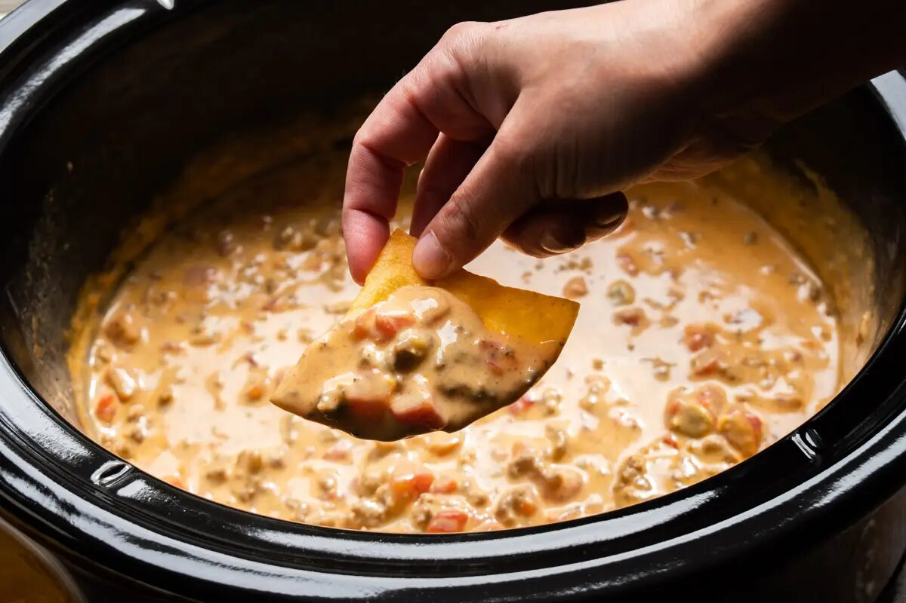

Rotel Dip

We're going to make one of my favorite easy meals that I enjoyed growing up; Rotel Dip! For this recipe,we will make it in a slow cooker. So please prepare your slow cooker by putting the temperature on HIGH